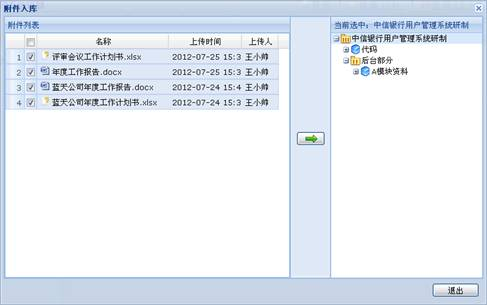

附件管理模块主要实现了对项目各模块中附件的统一管理，方便用户查看、下载和入库。目前仅实现大事记、任务文件、节点成果模块中附件的管理，本模块将在后续版本中逐步完善。
附件管理界面如下图所示：
图 附件管理
4.2.11.1 附件查询
本模块提供了多种方式过滤、查询附件，方便用户快速定位附件。
1、按来源过滤
例如，用户可以选择“大事记”来查询大事记模块中的全部附件。
2、按上传人过滤
例如，用户可以选择“”来查询由用户上传的全部附件。
3、按关键字过滤
用户可以输入附件名称，或所属内容的关键字来快速查询附件。
4、高级查询
用户可以点击“高级查询”按钮，打开高级查询界面，加入更多的查询条件查询附件。
4.2.11.2 附件下载
用户可以直接点击附件名称下载附件。
4.2.11.3 附件入库
附件管理模块提供了将附件导入到配置管理中的功能。可以点击附件操作列的入库图标将单个附件入库，也可以选择多个附件批量入库，还可以直接选择一个或多个附件来源文件，将该文件中的所有附件批量入库。
附件入库界面如下图所示。

图 附件入库